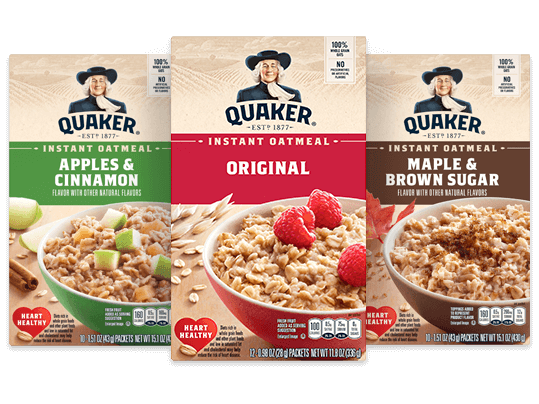

Oatmeal

This cool recipe is for the healthy and tasty oatmeal! It is very quick and easy.
Oatmeal is low in calories and high in carbs. In this recipe, there are additions to increase the calorie count and protein.
Ingredients
- 1 Quaker's Instant Oatmeal Packet
- 1/2 cup of Milk
- 1-2 tbsp of Butter (Higher or lower depending on calorie prefrence)
- 1 tsp of Honey (Optional)
Steps
- Tear open the Oatmeal packet and pour into a medium sized bowl
- Pour 1/2 Cup of Milk, using the Oatmeal packet as a measuring cup
- Add half of the butter you want to use into the bowl
- Put the bowl into the microwave and microwave for 1 minute and 10 seconds
- When done, take it out of the microwave (It's Hot!), then add in the remaining Butter and optional tsp of Honey
- Eat!